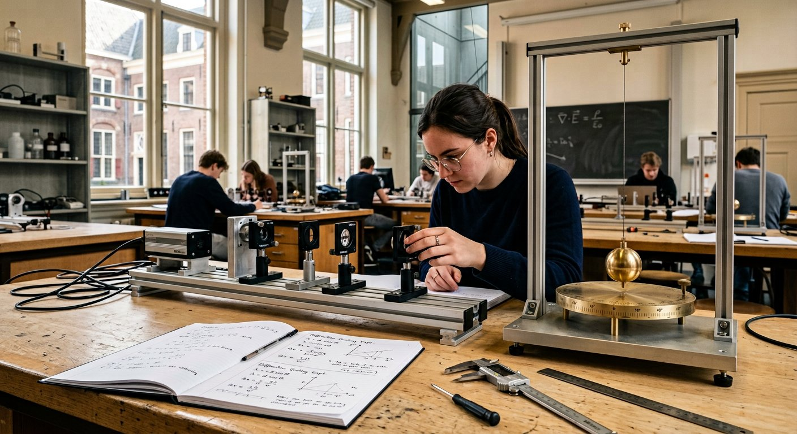
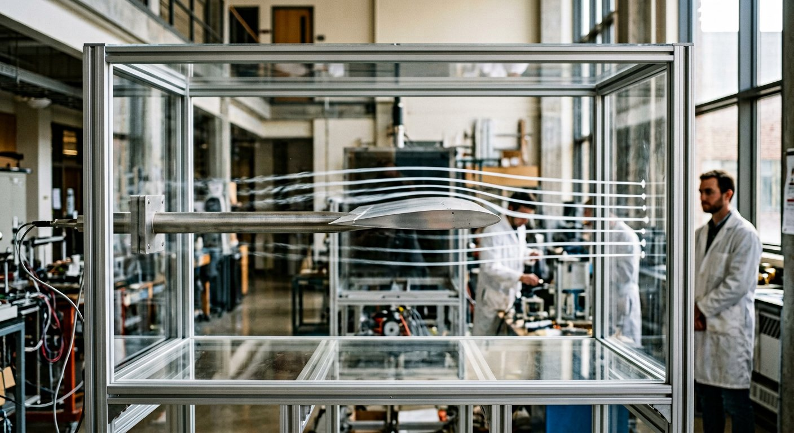
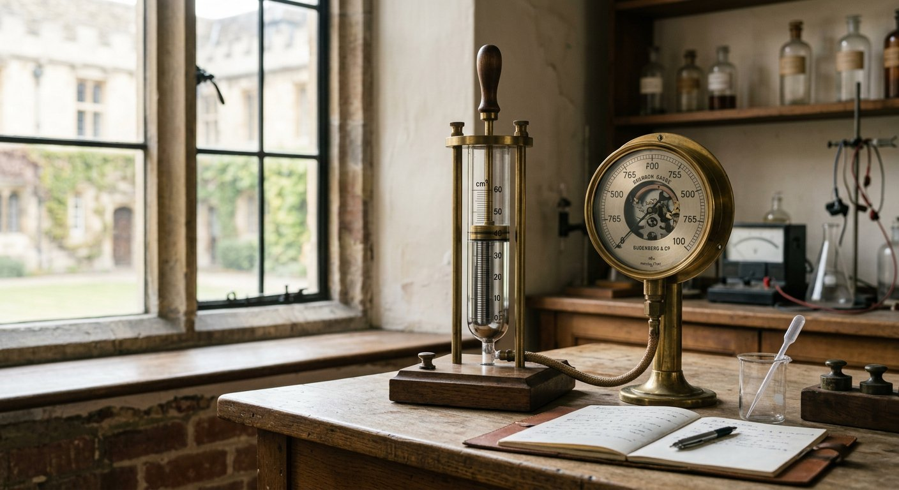
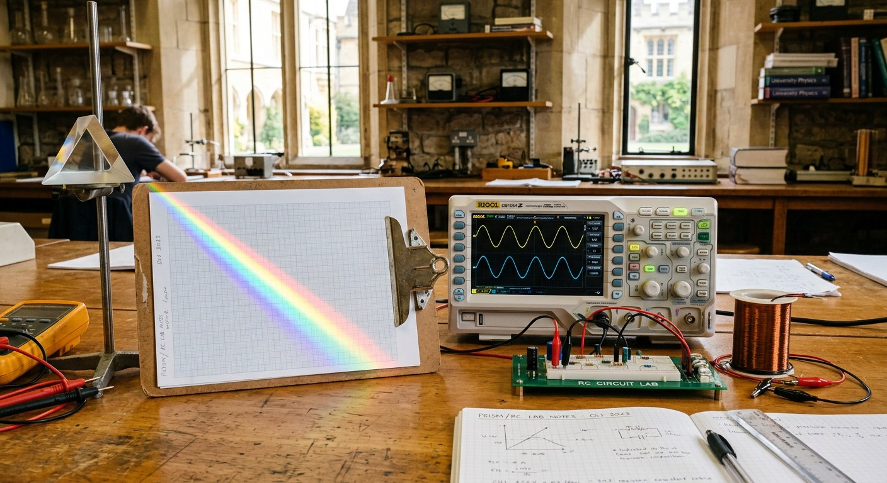

Test physical laws directly on a calibrated three-dimensional bench.
Built for junior and secondary physics students who learn faster by manipulating real apparatus than memorizing isolated formulas. Adjust mass, airfoil camber, gas compression, resistor bands, double-slit coherence, pendulum length, and refractive indices while watching force vectors and live plots respond together.

Eight Interactive Experimental Benches
Select any module row below to load its 3D apparatus, live scientific plotter, vernier parameter controls, and three quantitative student verification stamps.



Curriculum Reference & Physical Intuitions
Each module pairs its governing SI law with plain-language explanations of common classroom pitfalls. Review any section below or jump straight into its 3D bench.
v1.0 → v2.0 Engineering Repair Audit
Every mathematical error, inverted 3D transform, particle escape bug, dead toggle, and GPU memory leak found in the legacy code was isolated, repaired, and covered by deterministic regression assertions.
| ID & Module | Classification | Legacy v1.0 Defect | Root Technical Cause | v2.0 Calibrated Fix |
|---|